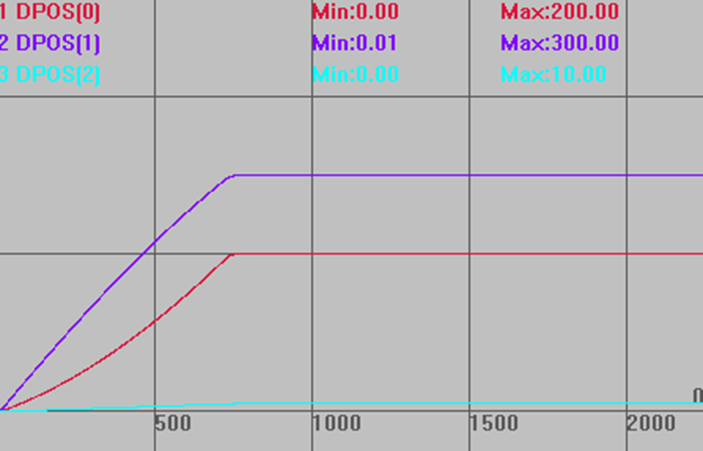

|
类型 |
多轴运动指令 |
|
描述 |
旋转的插补运动，保证在旋转台上是圆弧运动。
旋转功能是指工作平台在与XY平行的平面上旋转，旋转的正向与XY的正向要一致（右手法则）。 旋转的参数存储在TABLE表里面，依次存储R轴号，R轴一圈脉冲数，X轴号，Y轴号， X圆心，Y圆心。 自定义速度的连续插补运动可以使用SP后缀的指令，见*SP描述。 |
|
语法 |
MCIRC_TURNABS(tablenum, refpos1, refpos2, mode,end1, end2 [, dis3, dis4, dis5]) tablenum：存储旋转参数的table编号 refpos1：第一个轴参考点，绝对位置 refpos2： 第二个轴参考点，绝对位置 mode：1-参考点是当前点前面，2-参考点是结束点后面，3-参考点在中间，采用三点定圆的方式 end1 ：第一个轴结束点，绝对位置 end2 ：第二个轴结束点，绝对位置 dis3：螺旋轴的结束位置 |
|
适用控制器 |
通用 |
|
例子 |
BASE(0,1,2) ATYPE=1,1,1 '设为脉冲轴类型 UNITS=100,100,100 DPOS=0,0,0 SPEED=100,100,100 '主轴速度 ACCEL=1000 ,1000,1000 '主轴加速度 DECEL=1000 ,1000,1000 '主轴减速度 TABLE(0, 3, 3600, 0,1, 0,0) '设置旋转台的参数 TRIGGER TURN_POSMAKE(0,100,200,5,10) MCIRC_TURNABS(0,TABLE(10),TABLE(11),3,200,300,10) '圆弧的同时3轴旋转 WAIT IDLE
插补轨迹 DPOS(0)垂直刻度200 DPOS(1)垂直刻度200 DPOS(2)垂直刻度200  |
|
相关指令 |